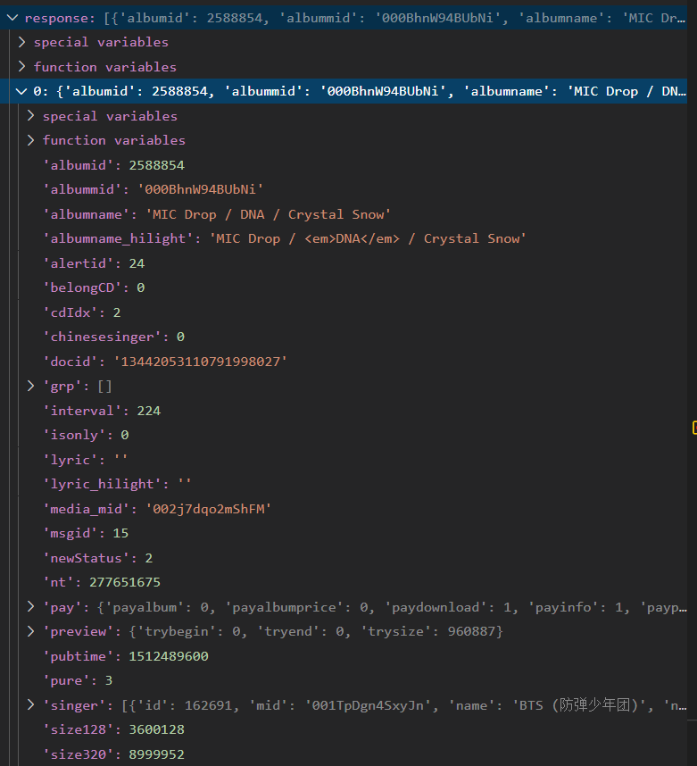
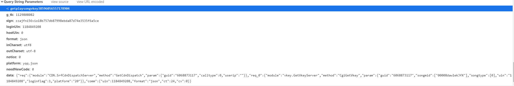
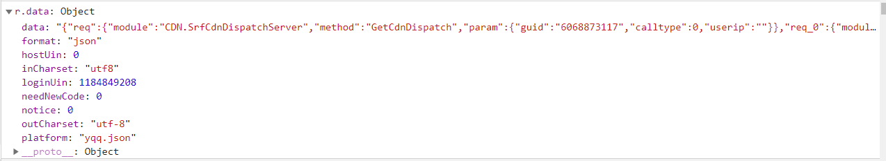

在做微信小程序MusicMood期间没有实现QQ音乐的API。现在参考大佬文章之后实现了搜索并下载免费音乐的API功能。主要由python编写，需导入sign.js。项目地址
QQ音乐API
- 搜索音乐，获得歌曲列表和对应songmid
- 找到所需歌曲songmid，对服务器申请url
- 拼接得到歌曲.m4a下载地址。
搜索音乐
| def __get_songs(self, name):
num = 10
url = 'https://c.y.qq.com/soso/fcgi-bin/client_search_cp?p=1&n='+str(num)+'&w='+name+'&format=json'
response = requests.get(url, headers=self.headers).json()['data']['song']['list']
return response
|
设定只显示歌曲搜索结果前10首。(经测试最大可单次请求显示60首)
response结构如下：

我们本文只用到了response[index]下的'pay','singer','songname','songmid'
申请url
下面是我从浏览器中取出的播放器http请求，作用是申请播放url。
| https://u.y.qq.com/cgi-bin/musics.fcg?-=getplaysongvkey38596056557178904&g_tk=1129808082&sign=zzajfni56vio18b757db87998ebda87d74e3535f6a5ce&loginUin=1184849208&hostUin=0&format=json&inCharset=utf8&outCharset=utf-8¬ice=0&platform=yqq.json&needNewCode=0&data=%7B%22req%22%3A%7B%22module%22%3A%22CDN.SrfCdnDispatchServer%22%2C%22method%22%3A%22GetCdnDispatch%22%2C%22param%22%3A%7B%22guid%22%3A%226068873117%22%2C%22calltype%22%3A0%2C%22userip%22%3A%22%22%7D%7D%2C%22req_0%22%3A%7B%22module%22%3A%22vkey.GetVkeyServer%22%2C%22method%22%3A%22CgiGetVkey%22%2C%22param%22%3A%7B%22guid%22%3A%226068873117%22%2C%22songmid%22%3A%5B%2200008daw1ekJfX%22%5D%2C%22songtype%22%3A%5B0%5D%2C%22uin%22%3A%221184849208%22%2C%22loginflag%22%3A1%2C%22platform%22%3A%2220%22%7D%7D%2C%22comm%22%3A%7B%22uin%22%3A1184849208%2C%22format%22%3A%22json%22%2C%22ct%22%3A24%2C%22cv%22%3A0%7D%7D
|

这个部分最麻烦的部分在于
需要正确的sign参数来保障request中data合法性
即在本地对data的签名要被服务器验算正确才能获取到purl
面向百度编程，启动！
从浏览器中寻找生成sign参数的原理，并找到其对应匿名函数并将__sign_hash_20200305存到js文件。
再通过大佬的手动debug分析，简写调用生成sign的js代码。
| function getSecuritySign(data){
let str = 'abcdefghijklmnopqrstuvwxyz0123456789';
let count = Math.floor(Math.random() * 7 + 10);
let sign = 'zza';
for(let i = 0; i < count ; i++){
sign += str[Math.floor(Math.random() * 36)];
}
sign += __sign_hash_20200305('CJBPACrRuNy7'+data);
return sign
}
|
这段代码别说2个小时了，给我20小时都搞不来，大佬太关键
通过在浏览器中进行网页调试找到getSecuritySign的函数所在，并探明函数所需要的参数r.data.data内容。

data模板固定，只需要替换songmid即可得到不同歌曲对应data。将替换好的data送入__get_Sign中得到sign参数。
| def __get_Sign(self,data):
print(os.path.realpath(__file__))
with open(os.path.realpath(__file__)+'/../sign.js', 'r', encoding='utf-8') as f:
js_content = f.read()
js_exec = execjs.compile(js_content)
sign = js_exec.call('getSecuritySign',data)
return sign
|
随后利用data和sign请求url。
拼接下载地址
对于上面的http请求，我们只取response[‘req_0’][‘data’][‘midurlinfo’][0][‘purl’]，并将purl与cdn域名https://isure.stream.qqmusic.qq.com/拼接即得到.m4a下载地址。
其他无关紧要的发现
var l=”getplaysongvkey”+(Math.random()+””).replace(“0.”,””);
对u.y.qq.com/cgi-bin/musics.fcg发送的get请求中:
getplaysongvkey后面的实际上是随机数
g_tk是函数getACSRFToken获得的令牌
loginUin以及comm字段中的uin是登录者的QQ号